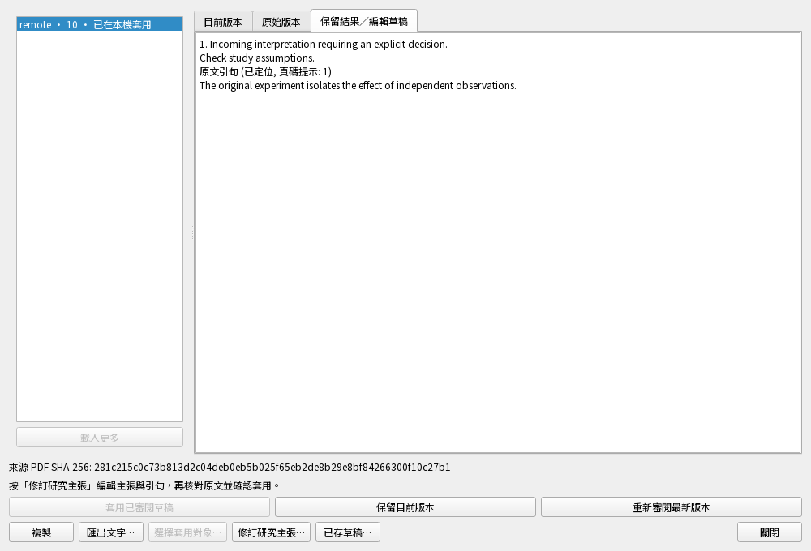
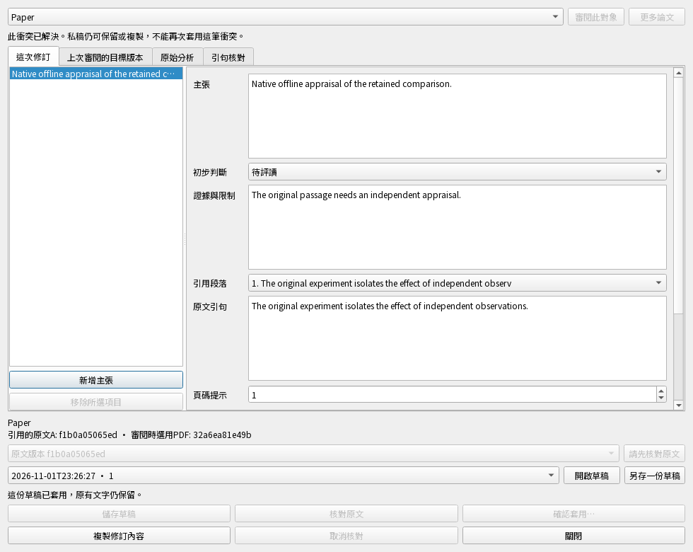
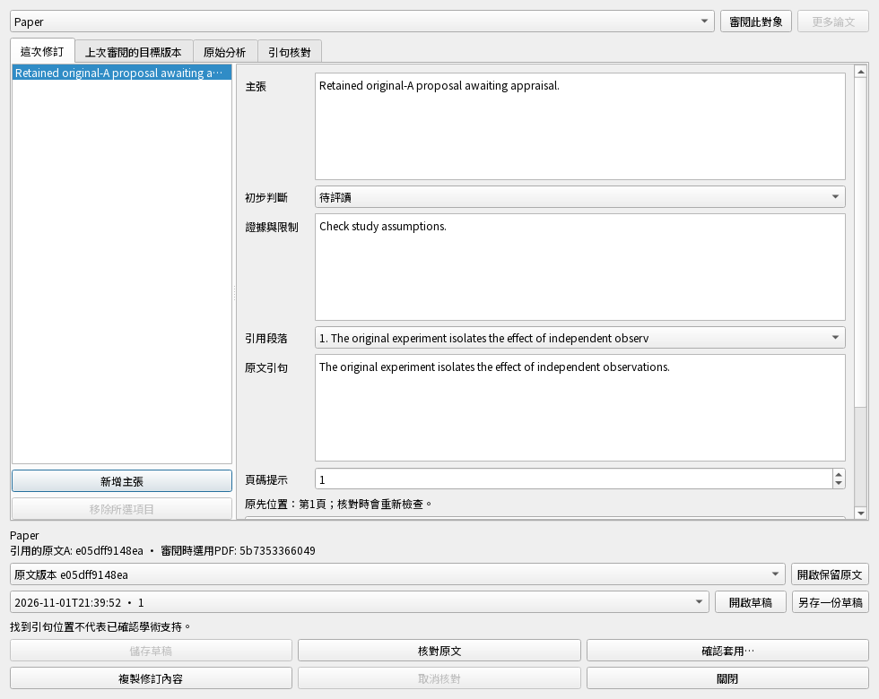
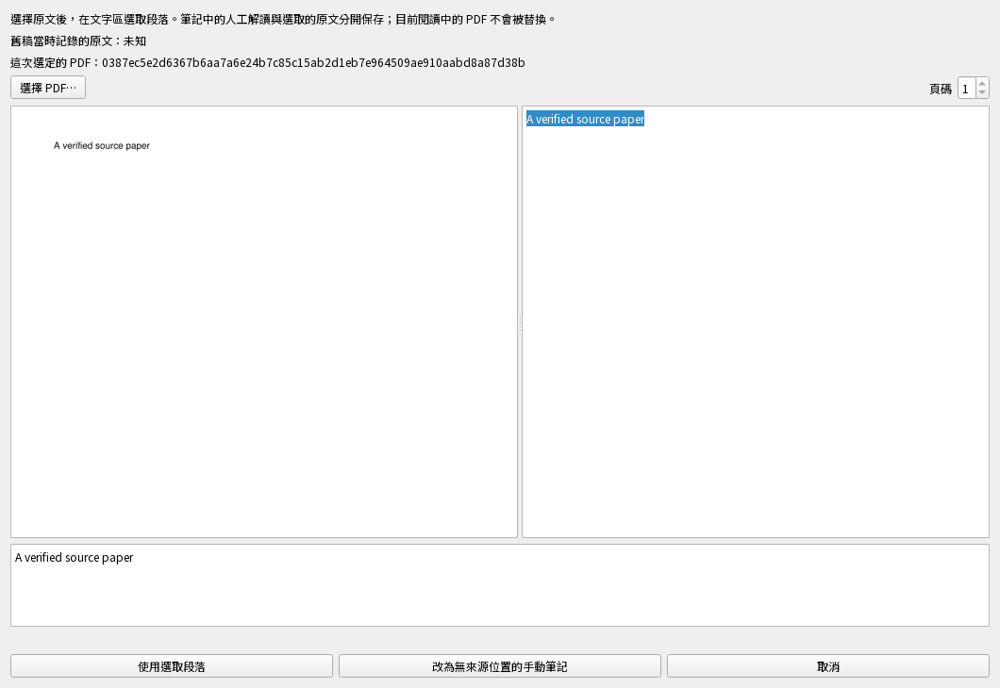

本次修正已通過相關檢查
沒有選清單的論文現在能恢復；後續刷新保留使用者目前選擇。原先兩個新增失敗案例已修復。
535 個手機單元案例、13 份 HTTP 情境程式、8 組瀏覽器啟動情境與實際離線筆記往返通過；同一候選程式，整輪 48.50 秒。
目前：恢復／遠端原生入口新增6項通過，79.09秒；產品內容與前輪130項相同。完整檢查未通過，0.5.0.dev未發布。
130項相關檢查通過，含24項新增，706.7秒。真正Qt欄位與合成資料；不是整版、安裝包或學術品質驗收。
測試實際怎麼操作在真正欄位改原句、理由與研究角色，保存、關閉再重開。另暫停儲存後繼續打字。
必須看到或保存的結果最後輸入的文字完整保存；舊儲存回覆不會蓋掉新字；空白未完成項目不破壞上一份私稿。
保留生成結果的原生入口；完整恢復／遠端入口、螢光筆工具、實機與正式服務仍待驗收。
測試實際怎麼操作先讀A、核對全部原句、取消一次確認，再明確套用。另測不存在的句子及刪除標記恢復選擇。
必須看到或保存的結果閱讀A不取得套用資格；目前B保留；未定位時不套用；取消不改研究；確認後完整儲存且可繼續編輯。
保留生成結果的原生入口；完整恢復／遠端入口、螢光筆工具、實機與正式服務仍待驗收。
測試實際怎麼操作暫停核對／套用／讀原文，分別取消、改稿或關閉；故意讓保存或決策失敗，再修復重試。
必須看到或保存的結果舊結果不套錯；視窗等待自身工作；失敗保留文字及正式研究；修復後可重試且只存一次。
保留生成結果的原生入口；完整恢復／遠端入口、螢光筆工具、實機與正式服務仍待驗收。
測試實際怎麼操作用Ctrl+A/C/V/Z/Y及Delete修改文字；在中英文、620／980寬度操作；關閉父子視窗後再查狀態。
必須看到或保存的結果選取、複製貼上與復原重做有效；按鈕在視窗內；關閉後不可見且重複關閉安全，原生資源在GUI釋放。
保留生成結果的原生入口；完整恢復／遠端入口、螢光筆工具、實機與正式服務仍待驗收。
後端與本機參考服務已測；原生編輯介面與CLI／MCP尚未接通。這輪269項通過，含38項新增，614.83秒；不是整版或安裝版驗收。
操作修改理由，核對所有引句並明確確認。
必須看到或保存的結果私稿、來源、分析、完整標記與待同步操作一起保存；手動畫線與隱藏選擇保留。
合成PDF與隔離資料／本機參考服務；沒有新的原生編輯視窗、安裝版Mac／手機或學術品質驗收。
操作故意使第二筆標記或收據儲存失敗，修復後重試。
必須看到或保存的結果失敗全部回滾；同一請求只保存一次，未發布私有A不會先取得所有權。
合成PDF與隔離資料／本機參考服務；沒有新的原生編輯視窗、安裝版Mac／手機或學術品質驗收。
操作八次並行送出，另測取消、改稿、來源損壞／退役與真正換資料庫。
必須看到或保存的結果重試不重複；過期或取消工作拒絕，所有歷史標記與私稿均受保護。
合成PDF與隔離資料／本機參考服務；沒有新的原生編輯視窗、安裝版Mac／手機或學術品質驗收。
操作兩份私稿備份、移走舊資料夾、接管；套用後同儕離線隱藏標記及加筆記，重開、同步回來、再次備份。
必須看到或保存的結果研究、選定那筆標記的隱藏狀態、其他歷史標記、筆記、A／B及兩種私稿內容都保留。
合成PDF與隔離資料／本機參考服務；沒有新的原生編輯視窗、安裝版Mac／手機或學術品質驗收。
新的螢光筆路徑是後端服務驗證；既有主張GUI與工具另外回歸，沒有冒稱新介面已完成。
操作保留人工理由／角色 → 從已保存的A核對整組原句 → 讀取A。
結果位置與人工報告正確，B與正式研究保留，不新增待送操作。位置正確不等於學術解讀成立。
操作分別改成缺失句子、錯頁與舊座標；另讓來源記錄與真正A不符。
結果問題保留，沒有半組標記或核對假成功；A仍能獨立閱讀，以便修正。
操作保存重開、核對另一稿、撤銷核對或改標記；再讀舊結果與原來的A。
結果舊修改結果拒絕，閱讀已保存A與修改資格分開；精確私稿版本不偷偷更新，退役來源不從快取復活。
操作備份 → 唯讀恢復 → 移走舊資料夾 → 接管成可編輯副本 → 選目標 → 讀A並核對。
結果A的位元組、文字及來源保留；不發布研究。整組套用及後續離線回傳仍待完成。
121項相關通過，含17個新案例。操作、實際耗時與未完成項 · 逐項案例說明。不是整版、正式服務或安裝版Mac／手機驗收。
這裡是共用後端服務的實際驗證；尚未接成安裝版中的完整修訂介面。
操作從真正保留分析保存兩份理由／角色不同的私稿 → 關閉 → 重開；另測同時保存與第二視窗。
結果兩份內容與原觀察保留。連存只留同一份，舊視窗不能覆蓋新文字；正式研究與同步佇列不變。
操作私存 → 備份 → 唯讀恢復 → 移走舊資料夾 → 建立新可編輯副本 → 明確選論文 → 再保存。
結果文字與來源雜湊保留，唯讀副本不被寫入，新稿綁新工作區。原文核對與正式套用仍待接上。
操作兩份獨立資料庫與本機參考服務製造衝突 → 禁止服務呼叫 → 私存重開 → 遠端再更新。
結果比較與人工文字保留，新更新後要求重新核對；單一標記不能冒充整份分析。
操作暫停A素材 → 切B畫重點並連按查看 → 放行A；另測取消B的跳轉或關閉。
結果只整理A與B兩次，定位B正確原句；已取消的新跳轉不會被舊工作喚回。
196項相關通過，含45個新案例。操作、實際耗時與未完成項 · 逐項案例說明。不是整版、正式服務或安裝版Mac／手機驗收。
先看實際操作與預期結果；案例數只交代範圍。
操作正式讀取器畫重點 → 暫停素材整理 → 連按12次 → 放行；另測等候時改選素材、切分頁或收起面板。
結果一次整理，完成後才定位同一原句；後續導航會取消自動跳轉，未存筆記保留。
操作對同一原文修改引句、角色、理由與頁碼；另測句子缺失、出現兩次或PDF換版。
結果重新核對實際可選位置；缺失與歧義明確保留，不沿用舊座標。整組未核對完成，就不輸出可套用標記。
這是內容核心，尚未接保存、重開、恢復或套用介面。找到原句也不代表研究解讀正確。
操作讓整理失敗後重按、工作中換原文或關閉；對舊讀取器注入過大／不合法標記。
結果保留既有內容，能明確重試；晚到結果不跳錯畫面，正式來源失效不降級繞過核對。
凍結候選318項相關通過，含43個新案例；隱私與Ruff通過，零程式變動。實際操作、耗時與未完成項 · 43個案例逐項說明。整版、Mac／手機安裝版及正式服務仍待驗收。
原列顯示「已在本機套用」，不代表雲端同步完成。更新標籤不重建編輯區；目前比較內容仍是你正在看的快照。
怎麼操作真正中英文Qt修訂視窗：套用後關閉；另測未套用即關閉，再重讀清單。
必須留下的結果已套用才標示本機決定；取消不假標完成，不多寫正式研究或待送資料。

怎麼操作暫停狀態送達 → 選另一筆真實候選 → 打未存文字 → 設定游標與兩處非零捲動 → 放行。
必須留下的結果只有原列更新；新選項、預覽、文字、焦點、游標、捲動與待送資料全部保留。
怎麼操作模擬暫時失敗後手動重試；另真正替換資料庫、關閉父視窗或在途中保存標題。
必須留下的結果晚到結果不亂標；能明確重試，其他保存至多重讀一次。主檔未改但WAL已有提交時，舊狀態仍拒絕。
114項相關整合通過，含25項新增／89項既有，482.22秒；隱私與Ruff通過，零失敗／錯誤／跳過／程式變動。不是整版、Mac／手機或正式雲端驗收。
答案是可以讀A版原文，目前閱讀的B版維持原樣；讀取不代表能再次套用。這輪測了下列操作與保存結果，並非AI學術品質評分。
怎麼操作真正Qt視窗中套用並同步 → 改私人文字而不存 → 開原文；另測連按十次、暫時SQL失敗及再次重試。
必須留下的結果開正確A；B與私人文字保留；不強迫私存、不新增正式研究或待送變更，套用維持停用。中英文與兩種PDF顯示器皆涵蓋。
怎麼操作暫停讀取或繪圖後改字／關視窗；另移除原文、等長改檔後還原時間、真正替換SQLite資料庫。
必須留下的結果晚到結果不亂開；關閉等待工作收尾。已移除或修改的A拒絕讀取，不把B或另一個快取當成A。
怎麼操作真實CLI子程序及官方MCP SDK：開私稿 → 讀詞序 → 套用 → 關程序 → 重連讀完成稿。
必須留下的結果前後詞序及A雜湊一致；錯版本拒絕，沒有新決定收據或正式研究寫入。
凍結候選的151項相關整合通過，含22項新增／129項既有；887.11秒，零失敗／錯誤／跳過／程式變動。隱私與Ruff通過。不是整版、Mac／手機、正式服務或真實AI驗收。
58項相關檢查通過，8項新增；整輪256.09秒。以下是真正Qt控制項與合成研究，不是Mac／手機實機、正式服務或整版驗收。
怎麼操作審閱保留內容 → 修訂研究主張 → 改字／核對A版原文 → 取消或確認 → 同步／重開。
必須留下的結果取消不改研究；確認一筆變更。B版PDF不換走，已完成內容不用重叫AI，重開仍有私稿。
介面說明舊比較先明確重新審閱；本機已有衝突決定則等待同步確認；已解決衝突不能再次套用。私人文字都可保留及複製。
實際結果重開後繼續改字、複製、私存，正式研究與同步佇列不受影響。980／620px主要按鈕與提示可見。

怎麼操作持有真正背景核對，分別取消、關閉父視窗，或讓另一端先解決並同步。
必須留下的結果晚到工作不能啟用套用；最新正式內容及私稿文字保留，父視窗等待工作收尾。舊草稿可明確重新選擇而不丟字。
111項相關檢查通過，10項新增；整輪524.53秒。包含真正本地資料庫／同步服務與既有Qt編輯流程，沒有Mac／手機實機或正式服務驗收。
怎麼操作兩端各改同一主張 → 同步形成衝突 → 禁止服務呼叫 → 私存／核對原文／確認 → 重開 → 重連。
必須留下的結果文字與一筆待送解決要求仍在；回桌機內容一致，兩端原衝突確實結束。A版引用不會移到正在看的B版PDF。
怎麼操作接續回傳內容 → 備份 → 移開原端資料夾 → 獨立恢復 → 建立可編輯副本。
必須留下的結果新文字、A版來源與B版PDF保留，檔案路徑屬於新副本；舊私稿／收據不變成執行權限。
取消後已完成的分析結果也能找到並人工修訂；不再多呼叫一次AI。
怎麼操作最後收據寫入故意失敗；核對後另一端先解決；讀取舊版草稿或選到另一篇論文。
必須留下的結果沒有半筆保存；新正式研究與私人文字保留；舊草稿明確重新選擇後才可套用，選單不提供不相干論文。
本輪10項新增案例與既有相互影響檢查通過；專用桌面按鈕已有上方後續結果；本節保留前輪後端範圍。
首輪101項通過、1項失敗後停止（446.92秒）；修正舊工具清單後，相關與未執行群組49項通過（30.69秒）。產品程式沒有改動，前段主張／筆記／桌面案例未全部重跑，兩段數字不相加。新增22個主張案例包含真正CLI程序與官方MCP SDK。
怎麼操作選保留稿與目標論文 → 改字／私存 → 重開CLI或MCP → 讀回 → 核對原文 → 確認套用。
必須保存的結果文字與版本完整；引用A版PDF，正在看的B版不換走；正式主張只改一次。
用真正程序、SQLite與測試PDF驗證；沒有呼叫真實AI，也沒有替換日常安裝版。
怎麼操作相同要求並行重送；分別在開稿、私存、正式套用最後一步故意失敗；再重試。
必須保存的結果相同要求只有一個結果；失敗時來源、主張、同步佇列及收據一起撤回。後來的新研究不被舊重送蓋掉。
本輪也修正：已成功要求遇到另一核對工作時錯報忙碌。新增案例修正前失敗、修正後通過。
怎麼操作獨立恢復後唯讀查看／建立可編輯副本；核對後另一操作先保存新文字。
必須保存的結果唯讀查看保持資料庫位元組及schema不變；舊套用拒絕，新私稿保留；可編輯副本用自己的來源。
這是前輪範圍；遠端／離線主張旅程已有上方後續結果，Mac／手機實機同步仍待驗收。
逐項操作與對應測試名稱 · 精確選取與耗時 · 精簡功能現況
「審閱保留內容」→「修訂研究主張…」。日常安裝版尚未替換；以下是測試資料與真正Qt元件，沒有Mac／手機實機或學術品質驗收。
實際操作選論文 → 改主張／理由／引句 → 私存 → 核對原文 → 取消或確認套用。
必須保存的結果欄位文字完整；核對A時仍讀B；取消不改正式研究，確認只儲存一次。

實際操作背景保存時繼續打字；取消核對；在保存途中關閉，另模擬磁碟失敗。
必須保存的結果後打的字接續保存；取消沒有套用權限；保存失敗保留視窗與文字，修好可重試。
實際操作移開原資料夾 → 獨立恢復 → 編輯／核對／套用；在980與620px操作中英文介面。
必須保存的結果新副本能用自己的A，B不被換走；晚到結果不能寫到被替換的研究庫，主要按鈕皆可操作。
60項相關檢查通過，含20項新增；整輪263.97秒。這是先前介面快照；主張CLI／MCP的後續結果見上方。完整歷史／離線修改旅程、整版與實機驗收仍未完成。逐項操作、結果與限制
以下操作使用真正測試PDF、SQLite與獨立恢復副本。這輪只驗證私稿保存；後續來源核對、確認套用與App編輯表單已有上方歷史結果；本節保持原輪範圍。
實際操作選目前論文 → 分別保存兩份私稿 → 重開 → 讀回上次編輯的版本。
必須保存／看到的結果兩份文字完整；正式主張與待同步資料不變，收到新版主張也不會換掉私稿原先的內容版本。
93項相關檢查通過，含22項新增；不是整版、實機或學術品質驗收。
實際操作同一稿重送十次保存、兩個視窗先後修改、分別在保存前及途中關閉。
必須保存／看到的結果重送只有一筆；舊視窗不能覆蓋新版；關閉後拒絕新工作，已開始私存仍能完成。
93項相關檢查通過，含22項新增；不是整版、實機或學術品質驗收。
實際操作備份 → 獨立恢復 → 移開原資料夾 → 唯讀預覽 → 建立可編輯副本 → 選目標 → 再私存。
必須保存／看到的結果草稿與來源版本保留，預覽不改資料庫；使用新工作區身分，沒有舊路徑依賴或自動套用。
93項相關檢查通過，含22項新增；不是整版、實機或學術品質驗收。
沒有選清單的論文現在能恢復；後續刷新保留使用者目前選擇。原先兩個新增失敗案例已修復。
535 個手機單元案例、13 份 HTTP 情境程式、8 組瀏覽器啟動情境與實際離線筆記往返通過；同一候選程式，整輪 48.50 秒。
最後一次完整 App 檢查在 392 個通過後遇到 1 個失敗並停止。引用自動補問與完成判定仍需處理。
程式仍在隔離整合工作區；沒有新的安裝包、Mac／手機實機或正式雲端驗收。本次結果範圍
新增6項通過，79.09秒。產品／舊測試與前輪130項檢查相同，不相加；不是整版或實機驗收。
測試實際怎麼操作備份後移走舊資料夾、接管，從審閱清單連按修訂；改理由、私存、讀A、取消確認再套用，繼續改字後重開。
必須看到或保存的結果只開一個編輯器；套用前研究不變；套用後一筆決策，B不切換，兩份歷史私稿與後續文字保留。
合成PDF、獨立恢復庫／本機服務；未驗收安裝版Mac／手機、正式服務或學術品質。
測試實際怎麼操作兩個本機客戶端產生分析衝突，從審閱入口改理由／讀A／核對／確認；同步完整標記，重開後再改私稿與複製。
必須看到或保存的結果中英文入口皆可用；分析與兩筆標記到另一端；已解決狀態明確停用核對／套用／重選，私稿仍能保存，無新待送研究。
合成PDF、獨立恢復庫／本機服務；未驗收安裝版Mac／手機、正式服務或學術品質。
測試實際怎麼操作在恢復後的真正欄位保存理由，暫停讀A，關閉父視窗，再放行工作。
必須看到或保存的結果父子視窗等自身工作結束再關閉；不晚開原文，正式分析與待同步操作不變，理由仍在私稿。
合成PDF、獨立恢復庫／本機服務；未驗收安裝版Mac／手機、正式服務或學術品質。
測試實際怎麼操作暫停本視窗核對，另一個ResearchReview用真正操作保存不同決策，之後放行原核對。
必須看到或保存的結果晚結果不能套用或覆蓋新分析／標記／佇列；自己的原私稿文字保留，只有另一操作的一筆決策。
合成PDF、獨立恢復庫／本機服務；未驗收安裝版Mac／手機、正式服務或學術品質。
有基礎，尚未完成整體旅程
本機變更佇列、離線重試、衝突保留與裝置控制已有實作和局部案例。
還缺：全部研究內容與歷史完整串接、正式身分與服務、兩台安裝版實際往返。
已有本機流程驗證
PDF、筆記、可編輯簡報、圖片與來源可經匯入、核對與匯出保留；備份也測了獨立恢復。
還缺：其餘內容類型、歷史及恢復路徑整合。研究包是分享快照，不是持續同步。
先前已接入並局部驗收
素材背景整理可重試；切到新版 B 後點舊素材，另開保存的 A，保留 B 與編輯草稿。
限制：視窗到達宣告頁碼，不等於精確引文匹配或學術支持。封存來源與其他來源格式仍需完成。
已有 PWA 和模擬整合，實機未驗收
PWA 離線重載、純文字筆記與桌面往返已有本機瀏覽器驗證。
還缺：Apple Silicon Mac、iPhone／Android 真實離線、重連與資料往返。
部分功能已有實作
清單研究目標、逐項來源，以及部分原文查核、比較與研究評讀已有本機案例。
還缺：完整研究脈絡、查核結果保存與分享、研究者的品質驗收。模擬 AI 回覆不能證明學術判斷正確。
沿用維護版基礎，0.5 安裝版未驗收
既有維護版的更新與診斷基礎會保留；這份報表不代表已發布新安裝包。
還缺：最終整版檢查、相同版本的各平台安裝包與實機驗收。
離線重載、損壞快取與頁首操作均有實際驗證。點選下方動作，查看保存結果與限制；這仍不是整版或實機通過。
實際操作分別從清單與論文庫閱讀 → 離線保存 → 重載頁面 → 自動恢復 → 明確連線。
實際保存／觀察結果沒有選清單也回到原論文；草稿與單一待送項目保留。後續刷新不跳回舊選擇；新頁面不重用憑證或自動送出研究。
獨立隱藏Chrome、合成資料、本機服務；不代表Mac／手機實機或正式帳號驗收。
實際操作以不存在、被刪除、錯誤身分或損壞的快取啟動，再明確選擇示範。
實際保存／觀察結果拒絕錯誤快取並提供連線指引；既有研究不變，示範只清除選擇提示。
獨立隱藏Chrome、合成資料、本機服務；不代表Mac／手機實機或正式帳號驗收。
實際操作中英文在320／390／600／1100px量測，使用Enter開啟連線、Escape關閉。
實際保存／觀察結果品牌與同步在第一排、常用動作在第二排；標籤不擠成直排，至少44px高，無整頁溢出。
獨立隱藏Chrome、合成資料、本機服務；不代表Mac／手機實機或正式帳號驗收。
桌面 22 項、手機 512 個單元案例及 13 份 HTTP 情境程式通過。真正 PWA 按鈕與離線重載另有畫面驗證；不是整版或實機通過。
實際操作在真正 Qt 編輯器改字、連按保存、同步到另一份研究庫；另一端先改新版後，再保存舊稿。
實際保存／觀察結果正常只存一次；晚到舊稿保留原文與一份候選，新版及建立時間不被覆蓋。
隔離 Qt／Chrome、合成資料與本機服務；不是 Mac／手機實機或正式同步驗收。
實際操作離線輸入並保存 → 重載 → 手選既有工作區 → 重連 → 桌面修改 → 手機再保存。
實際保存／觀察結果IndexedDB 文字與單一佇列保留；兩端真正收到新文字，非本文欄位完整保留。
隔離 Qt／Chrome、合成資料與本機服務；不是 Mac／手機實機或正式同步驗收。
實際操作分別測試乾淨編輯器與已輸入未存文字時，收到桌面新版。
實際保存／觀察結果乾淨編輯器可真正保存並送回；未存稿保留自己的文字與基準，阻止蓋掉新版。
隔離 Qt／Chrome、合成資料與本機服務；不是 Mac／手機實機或正式同步驗收。
兩條完整資料流均通過；121.25 秒整輪。使用本機參考服務，尚非 Mac／手機或正式同步驗收。
實際操作保存含原文位置的私稿 → 備份 → 唯讀恢復 → 建立新的可編輯副本 → 明確選目標 → 核對 A → 確認套用 → 再次備份恢復。
實際保存／觀察結果文字、A 的 PDF 位元組與引句位置保留；讀取舊資料夾被禁止仍可完成；原機正式資料不變。舊草稿 ID 不能直接使用，舊重試收據只留在歷史，新工作區必須重新開啟核對。
1/1 通過；78.07 秒，含資料準備與收尾。
獨立資料庫、合成 PDF、本機參考服務；不是兩台實機、正式登入或安裝包驗收。
實際操作傳遞筆記及 A → 不連服務先修改 → 重建客戶端模擬重開 → 重連同步回原機 → 重送舊套用要求 → 備份恢復。
實際保存／觀察結果離線文字與待送佇列跨客戶端重建保留；重連後原機收到新文字。舊重試只回傳先前結果，不覆蓋新文字。A 位元組和位置仍正確、B 仍是目前原文；私稿及重試收據不會傳到同儕，備份保留研究與歷史。
1/1 通過；41.09 秒，含資料準備與收尾。
獨立資料庫、合成 PDF、本機參考服務；不是兩台實機、正式登入或安裝包驗收。
13 個新增案例全部通過，包含在本輪 88 個相關回歸內；不能相加。以下每列均有真正執行結果。
實際操作分頁列出歷史與目標；開私稿、讀 A 的詞、重新對應、保存文字；先不確認，再確認並重送同一要求。
實際保存／觀察結果未確認時正式筆記與同步佇列不變；確認保存文字與 A 的引句，只增加一次來源及筆記變更；不同內容沿用舊操作 ID 被拒絕。
1/1 通過；29.49 秒（含隔離資料準備與收尾）
隔離資料、真正本機程序／Qt；不是 Mac／手機、正式同步或學術品質驗收。
實際操作讀取 B、明確對應段落，再移除位置並選擇保留目前筆記。
實際保存／觀察結果原始來源仍為未知；私稿可改為無位置筆記；保留決定不改正式內容或同步佇列。
1/1 通過；29.11 秒（含隔離資料準備與收尾）
隔離資料、真正本機程序／Qt；不是 Mac／手機、正式同步或學術品質驗收。
實際操作讓操作收據寫入失敗，比對草稿版本與正式資料；修復後重送原要求，再重送一次。
實際保存／觀察結果失敗不留下半份版本或待同步資料；修復後能成功保存，重送取得同一結果。
1/1 通過；22.35 秒（含隔離資料準備與收尾）
隔離資料、真正本機程序／Qt；不是 Mac／手機、正式同步或學術品質驗收。
實際操作並行開啟同一歷史筆記與目標，最後再重試並查詢草稿及操作紀錄數量。
實際保存／觀察結果只留下同一份草稿與一筆操作紀錄；成功回覆相同，忙碌失敗須是可重試的儲存錯誤。
1/1 通過；28.10 秒（含隔離資料準備與收尾）
隔離資料、真正本機程序／Qt；不是 Mac／手機、正式同步或學術品質驗收。
實際操作逐一送出八種錯誤參數，再要求讀取另一份未宣告的原文。
實際保存／觀察結果參數錯誤與來源不可用均回傳結構化原因；正式資料不變，錯誤不洩漏工作區路徑。
1/1 通過；22.34 秒（含隔離資料準備與收尾）
隔離資料、真正本機程序／Qt；不是 Mac／手機、正式同步或學術品質驗收。
實際操作暫停原文檢查、保存較新文字，再放行原先的來源對應要求。
實際保存／觀察結果舊要求回報版本衝突；新文字與版本保留，不留下舊操作收據、正式變更或待同步資料。
1/1 通過；25.97 秒（含隔離資料準備與收尾）
隔離資料、真正本機程序／Qt；不是 Mac／手機、正式同步或學術品質驗收。
實際操作替換檔案後擷取完整邏輯內容，再放行舊工作、重讀舊稿並查詢操作紀錄。
實際保存／觀察結果舊工作與舊稿均拒絕繼續；整份替換後資料庫邏輯內容不變，沒有失敗操作的收據。
1/1 通過；23.24 秒（含隔離資料準備與收尾）
隔離資料、真正本機程序／Qt；不是 Mac／手機、正式同步或學術品質驗收。
實際操作以獨立 CLI 及官方 SDK 啟動的 MCP 程序列出歷史筆記，並嘗試匯入清單。
實際保存／觀察結果兩種介面可讀兩份歷史筆記且顯示不可編輯；寫入要求拒絕，資料庫位元組完全相同。
1/1 通過；27.03 秒（含隔離資料準備與收尾）
隔離資料、真正本機程序／Qt；不是 Mac／手機、正式同步或學術品質驗收。
實際操作拒絕路徑與假參照，讀取真正 A，再改動外露參照及檔案庫綁定。
實際保存／觀察結果改字典不能把讀取憑證換成 B；錯誤檔案庫綁定被拒絕，正式資料不變。
1/1 通過；21.91 秒（含隔離資料準備與收尾）
隔離資料、真正本機程序／Qt；不是 Mac／手機、正式同步或學術品質驗收。
實際操作禁止開檔案選擇器，在真正 Qt 對話框選已保存的 A，載入詞與頁面並確認段落。
實際保存／觀察結果對話框能讀 A 並建立第 1 頁的新位置；原正式筆記不變。
2/2 通過；46.23 秒（含隔離資料準備與收尾）
隔離資料、真正本機程序／Qt；不是 Mac／手機、正式同步或學術品質驗收。
實際操作列出筆記、開私稿、拒絕路徑、移除位置、私存、重讀、確認套用並重送。
實際保存／觀察結果重開保留相同私稿與新文字；正式內容只在確認後變更；純文字筆記沒有來源位置，輸出不帶本機路徑。
1/1 通過；26.54 秒（含隔離資料準備與收尾）
隔離資料、真正本機程序／Qt；不是 Mac／手機、正式同步或學術品質驗收。
實際操作發現 17 個工具，讀 A 並對應私稿、存文字，關閉連線後重開、確認套用與重送。
實際保存／觀察結果重連保留文字與修訂；不接受布林版本號，重送取得相同結果，改變已用操作的決定會衝突。
1/1 通過；30.73 秒（含隔離資料準備與收尾）
隔離資料、真正本機程序／Qt；不是 Mac／手機、正式同步或學術品質驗收。
22 個實際案例通過 · 170.55 秒測試／172.06 秒整輪
選接收筆記 → 選 PDF 與原文段落（或移除失效位置）→ 私存重開 → 核對 → 確認套用 → 傳遞與再次備份恢復。
舊稿沒記來源就保持「未知」；本次人工選定的來源另外保存。取消不改正式研究，舊稿與目前閱讀 B 都保留。

前輪23個新增案例已包含在前輪指定檢查內；耗時含資料準備，不是 App 操作延遲。
通過 1/1 · 27.64 秒（含隔離準備與收尾）
操作真實衝突稿指定四詞原文的第九個詞，私存編輯後核對。
保存的結果拒絕越界位置，不發布來源或研究；原稿、私稿與待同步資料保留。
指定本機案例；不是整版、Mac／手機、正式服務或學術品質驗收。
通過 4/4 · 117.50 秒（含隔離準備與收尾）
操作先核對並準備原文，再分別換裝置綁定、改不完整、刪綁定或真正替換索引檔；要求套用及原文重核對，最後補回原資料重試。
保存的結果舊套用與原文重核對被拒絕，筆記和佇列不變；私稿保留，修回後能重新核對。
指定本機案例；不是整版、Mac／手機、正式服務或學術品質驗收。
通過 2/2 · 49.71 秒（含隔離準備與收尾）
操作在隔離資料中移除完整歷史的 manifest 或改動保存列，再要求讀取；測試補回原始資料後重開。
保存的結果不展示未驗證歷史，不動研究與佇列；補回後兩份人工稿與原字串一致。
指定本機案例；不是整版、Mac／手機、正式服務或學術品質驗收。
通過 2/2 · 47.42 秒（含隔離準備與收尾）
操作分別恢復沒有來源版本的選取位置與純頁碼筆記，私存後核對。
保存的結果提示需要記錄中的 PDF 版本，保留私稿，不把位置直接套到目前 B。
指定本機案例；不是整版、Mac／手機、正式服務或學術品質驗收。
通過 1/1 · 23.64 秒（含隔離準備與收尾）
操作恢復引用單頁 A 第二頁的真實衝突稿，目前另選 B，再核對。
保存的結果拒絕 A 的越界頁碼，來源資格、研究與待同步資料不增加。
指定本機案例；不是整版、Mac／手機、正式服務或學術品質驗收。
通過 1/1 · 24.54 秒（含隔離準備與收尾）
操作核對並開啟 A，另存一份無關快取，背景重核對同一原文後套用筆記。
保存的結果只要求重新核對；仍讀相同 A，並能成功套用人工文字。
指定本機案例；不是整版、Mac／手機、正式服務或學術品質驗收。
通過 1/1 · 30.76 秒（含隔離準備與收尾）
操作先核對及私存，故意讓最後來源身分檢查失敗，再嘗試舊預覽套用；恢復檢查後重試。
保存的結果不留下半套或舊的套用資格，私稿保留；恢復後能核對相同來源。
指定本機案例；不是整版、Mac／手機、正式服務或學術品質驗收。
通過 1/1 · 27.07 秒（含隔離準備與收尾）
操作明確選同篇論文的另一筆較早筆記作為目標，核對並確認套用。
保存的結果只改選定筆記的內容與來源；其身分和建立時間保留，未選筆記完全相同。
指定本機案例；不是整版、Mac／手機、正式服務或學術品質驗收。
通過 3/3 · 0.03 秒（含隔離準備與收尾）
操作製作含一般詞與旋轉標籤的兩頁 PDF，驗證單詞及跨頁選取端點。
保存的結果一般詞端點通過；選取詞流維持原文索引，旋轉標籤不混進可選取文字。
指定本機案例；不是整版、Mac／手機、正式服務或學術品質驗收。
通過 4/4 · 0.02 秒（含隔離準備與收尾）
操作對真正含旋轉文字的 PDF，分別指定旋轉詞、越界詞、缺頁與倒置端點。
保存的結果每種無法對應原文選取的座標均被拒絕。
指定本機案例；不是整版、Mac／手機、正式服務或學術品質驗收。
通過 1/1 · 0.01 秒（含隔離準備與收尾）
操作記錄真實 PDF 詞流讀取，先核對兩頁端點，再核對同一頁的兩個端點。
保存的結果兩頁各讀一次；同頁只讀一次，不為起點與終點重複解析。
指定本機案例；不是整版、Mac／手機、正式服務或學術品質驗收。
通過 2/2 · 52.61 秒（含隔離準備與收尾）
操作在中英文實際 Qt 視窗編輯並開 A，改來源裝置綁定，重核對失敗後再補回原綁定重試。
保存的結果關閉失效原文並清除快照，私稿保留、套用與開原文停用；重新核對成功才恢復按鈕，研究未被改動。
指定本機案例；不是整版、Mac／手機、正式服務或學術品質驗收。
選目前筆記 → 核對來源 → 私存編輯 → 確認套用。原稿保留；B 不會被 A 替換。
操作製造兩裝置筆記衝突，私存兩份人工稿，備份後恢復成可編輯副本；選目前筆記、儲存、重開、核對及重試套用。
必須看到或保存的結果保留原稿與目標筆記身分；內文及來源改為審閱稿，待同步變更只產生一次。
隔離資料／Qt／本機參考服務；不是整版、Mac／手機、正式雲端或學術品質驗收。
操作禁止存取原資料夾與原資料庫，讀取恢復副本中的兩份人工稿，再比較保存的歷史資料。
必須看到或保存的結果兩份人工稿皆可匯出；歷史不變，也不重新啟動舊草稿工作表。
隔離資料／Qt／本機參考服務；不是整版、Mac／手機、正式雲端或學術品質驗收。
操作分別傳入空目標及不存在的筆記 UUID，之後比較筆記、來源、決策與待同步資料。
必須看到或保存的結果兩次均拒絕，原稿、研究與待同步資料皆維持。
隔離資料／Qt／本機參考服務；不是整版、Mac／手機、正式雲端或學術品質驗收。
操作私存人工編輯，讓決策儲存故意失敗，檢查筆記、來源與佇列；恢復後重試同一請求。
必須看到或保存的結果失敗全部撤回但私稿仍在；重試只新增一組來源與筆記變更。
隔離資料／Qt／本機參考服務；不是整版、Mac／手機、正式雲端或學術品質驗收。
操作四個工作執行緒送出八次相同請求，再以相同請求編號送另一段內文。
必須看到或保存的結果相同請求只提交一次並保留目標身分；換內文的重試被拒絕。
隔離資料／Qt／本機參考服務；不是整版、Mac／手機、正式雲端或學術品質驗收。
操作第二視窗先存新稿，再讓第一視窗用舊版號儲存；嘗試匯出未存成功的文字。
必須看到或保存的結果較新私稿與版號保留，舊版儲存被拒絕，失敗的文字仍能匯出，正式筆記未改。
隔離資料／Qt／本機參考服務；不是整版、Mac／手機、正式雲端或學術品質驗收。
操作私存草稿後，分別以正式儲存流程改筆記、改論文名稱、刪除再重建筆記，然後核對舊預覽。
必須看到或保存的結果核對被拒絕，不覆蓋新的研究；私存文字仍可讀取。
隔離資料／Qt／本機參考服務；不是整版、Mac／手機、正式雲端或學術品質驗收。
操作分別改錯檔案庫工作區、裝置、資料庫路徑、完整標記或原文字節，核對失敗後修回並重試。
必須看到或保存的結果失敗不發布來源或研究且私稿保留；修復後核對正確舊版 A，不能拿目前 B 替代。
隔離資料／Qt／本機參考服務；不是整版、Mac／手機、正式雲端或學術品質驗收。
操作從真正未綁原文的遠端筆記衝突恢復草稿；目前已有 B，仍核對並套用人工稿。
必須看到或保存的結果筆記無頁碼或錨點，不冒用 B；只新增筆記變更，不發布假來源。
隔離資料／Qt／本機參考服務；不是整版、Mac／手機、正式雲端或學術品質驗收。
操作接受人工筆記後透過本機參考服務傳到獨立裝置，下載來源，再將接收端備份並獨立恢復。
必須看到或保存的結果另一裝置有相同筆記與 A，仍選 B；第二次恢復保留全部筆記、兩份原稿及私存資料。
隔離資料／Qt／本機參考服務；不是整版、Mac／手機、正式雲端或學術品質驗收。
操作在私存稿副本中分別竄改未知欄位、型別、目標、建立時間、來源及觀察資訊，重算完整性指紋再驗證。
必須看到或保存的結果每種不合法格式均被拒絕，真正私存文字仍在；不是只靠舊指紋擋住。
隔離資料／Qt／本機參考服務；不是整版、Mac／手機、正式雲端或學術品質驗收。
操作在真正 Qt 視窗選歷史筆記與目標，連按接續與開原文；編輯後先取消，再確認並連按套用，關閉後重開。
必須看到或保存的結果看得到兩份筆記來源與 A 原文；取消不寫入，確認只存一次，重開保留編輯並要求重新核對。
隔離資料／Qt／本機參考服務；不是整版、Mac／手機、正式雲端或學術品質驗收。
操作暫停真正筆記來源核對，關閉視窗或改選另一份人工稿，再放行同一工作。
必須看到或保存的結果不晚開原文或寫研究；關閉維持關閉，另一份草稿保留自己的文字與唯讀狀態。
隔離資料／Qt／本機參考服務；不是整版、Mac／手機、正式雲端或學術品質驗收。
操作使用中英文小型案例清冊產生 HTML，檢查預設篩選、情境說明與保留的未說明案例資料。
必須看到或保存的結果預設勾選只看說明；操作、結果、限制均在，未說明案例仍保留並可搜尋。
隔離資料／Qt／本機參考服務；不是整版、Mac／手機、正式雲端或學術品質驗收。
核對後開啟 A；目前 B 和人工編輯保留，不發布研究或呼叫 AI。
操作核對草稿、私存編輯並準備 A，比對前後的原文、研究、待同步資料與 B。
必須看到或保存的結果讀出正確 A，使用草稿自己的唯讀憑證；私存文字、研究與 B 保留，不新增決策或待同步資料。
隔離 Windows／Qt；不是整版、Mac／手機或學術品質驗收。
操作禁止資料庫查詢、PDF 解析、內容雜湊與 AI 帳號查詢，連做二十次畫面核對後關閉審閱。
必須看到或保存的結果核對正常通過且沒有禁用呼叫；關閉後立即撤銷讀取資格。
隔離 Windows／Qt；不是整版、Mac／手機或學術品質驗收。
操作準備 A 後私存新編輯，再於背景核對原本的來源。
必須看到或保存的結果資料變動先要求重新核對；新憑證仍對應原預覽及相同 A，保留編輯且不發布研究。
隔離 Windows／Qt；不是整版、Mac／手機或學術品質驗收。
操作分別接受新研究、改動 A／B，或真正替換 SQLite 檔，再要求核對原文。
必須看到或保存的結果研究變動要求核對，檔案或資料庫身分變動立即失效；背景核對拒絕舊預覽，不自動改用新版本。
隔離 Windows／Qt；不是整版、Mac／手機或學術品質驗收。
操作分別使用唯讀歷史預覽、未核對草稿，以及目前 B 代替記錄中的 A。
必須看到或保存的結果三種操作都被拒絕，待同步研究資料保持相同。
隔離 Windows／Qt；不是整版、Mac／手機或學術品質驗收。
操作準備原文前取消，並禁止建立任何 SQLite 連線。
必須看到或保存的結果不產生原文快照，也不開啟資料庫。
隔離 Windows／Qt；不是整版、Mac／手機或學術品質驗收。
操作來源暫存後讓最後的目前文件核對失敗，檢查憑證與待同步資料，再恢復核對並重試。
必須看到或保存的結果失敗不留下來源或文件憑證，不發布研究；重試能讀出正確 A。
隔離 Windows／Qt；不是整版、Mac／手機或學術品質驗收。
操作連按開啟原文二十五次，檢視真正的 A 視窗，私存編輯後重新核對，再連按十次。
必須看到或保存的結果最初只開啟一次，PDF 解析不占畫面執行緒；A 仍可讀，編輯、B 與研究保留，沒有新增待同步操作。
隔離 Windows／Qt；不是整版、Mac／手機或學術品質驗收。
操作讓已啟動的原文準備暫停，關閉實際視窗或切到另一草稿，再放行並等待同一工作。
必須看到或保存的結果不會晚開原文；關閉維持關閉，或另一草稿保留原文字，也不發布研究。
隔離 Windows／Qt；不是整版、Mac／手機或學術品質驗收。
操作使用備用 PDF 顯示器，暫停實際繪圖執行緒，要求關閉審閱，再放行。
必須看到或保存的結果父視窗先等待工作收尾，之後兩個視窗關閉；私存文字保留且不新增待同步操作。
隔離 Windows／Qt；不是整版、Mac／手機或學術品質驗收。
操作先讓來源準備回傳一次模擬 SQLite 錯誤，再點同一按鈕，第二次使用真正的讀取流程。
必須看到或保存的結果第一次保留文字、顯示原因並恢復按鈕；第二次能讀出正確 A，不發布研究。
隔離 Windows／Qt；不是整版、Mac／手機或學術品質驗收。
案例數不是功能數。 同一操作用兩種工作區與四種切換方式重跑，就是八個案例。
百分比不是版本進度。 終端的 75% 只指該輪案例完成四分之三；不同案例耗時不同，也不是剩餘時間估算。
通過只證明測到的範圍。 AI 多為固定模擬回覆；真實登入、用量、學術品質與實際裝置另外驗收。